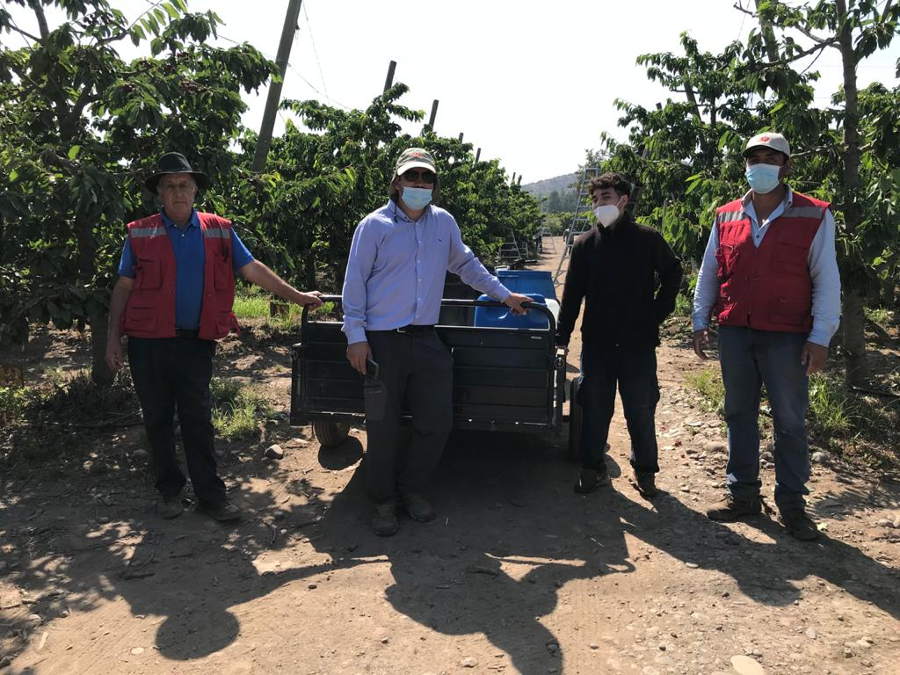

<section class="content-section" data-background="images/section-bg01.png" data-stellar-background-ratio="1.2">
  <div class="container">
    <div class="row align-items-center">
        <div class="col-12">
        <div class="section-title text-left">
          <h6>Our origins</h6>
          <h2>Beautiful landscapes and the farmers <br>
who bring us our food</h2>
        </div>
            <!-- end section-title -->
        </div>
          <!-- end col-12 -->
      <div class="col-lg-6">
        <div class="side-content left">
          <p>From rural crafts and traditions, practical and inspiring 
gardening tips, delicious recipes, <strong>wildlife</strong>, four-legged 
friends and great places to visit, to discovering more 
about your food provenance and how you can back 
British farming, Countryside aims to inspire everyone 
about rural life.</p>
          <p>Become a member of Countryside to show your 
support for British food and farming and we’ll send 
you our <u>fantastic magazine</u> every month. Plus, you’ll 
be able to enjoy a great range of member benefits 
and special offers to help you. Plus, you’ll be able to 
enjoy a great range of member benefits and special 
offers to help you make the most of the wonderful 
British countryside. Learn more about <strong>Countryside</strong> 
member benefits. </p>
          </div>
        <!-- end side-content --> 
      </div>
      <!-- end col-6 -->
      <div class="col-lg-6">
          <div class="side-image">
           
          <!-- end big-note-box --> 
          </div>
          <!-- end side-image -->
      </div>
      <!-- end col-6 --> 
    </div>
    <!-- end row --> 


  


  </div>
  <!-- end container --> 
  
</section>
  